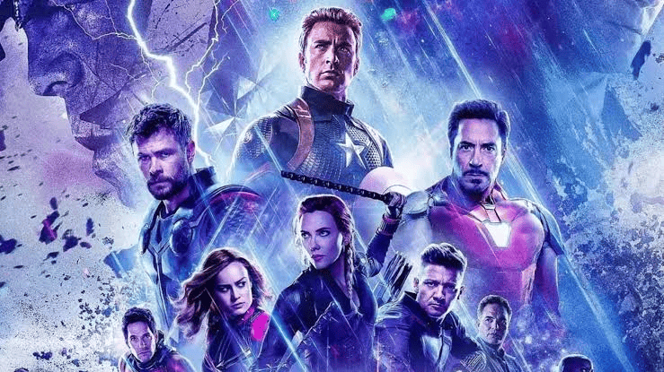
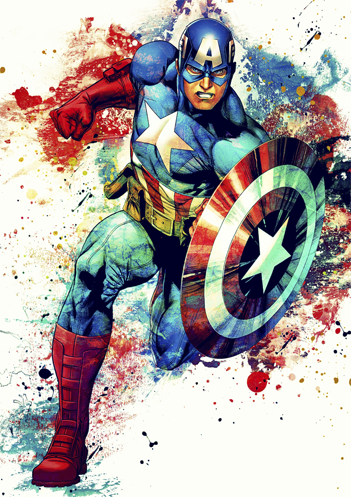
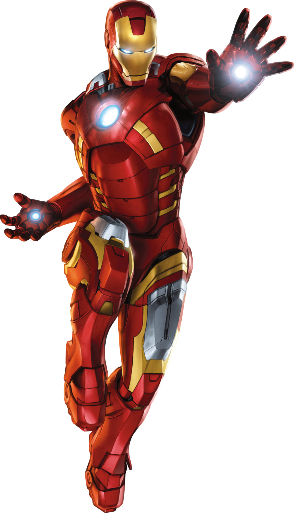
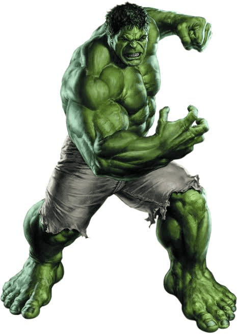
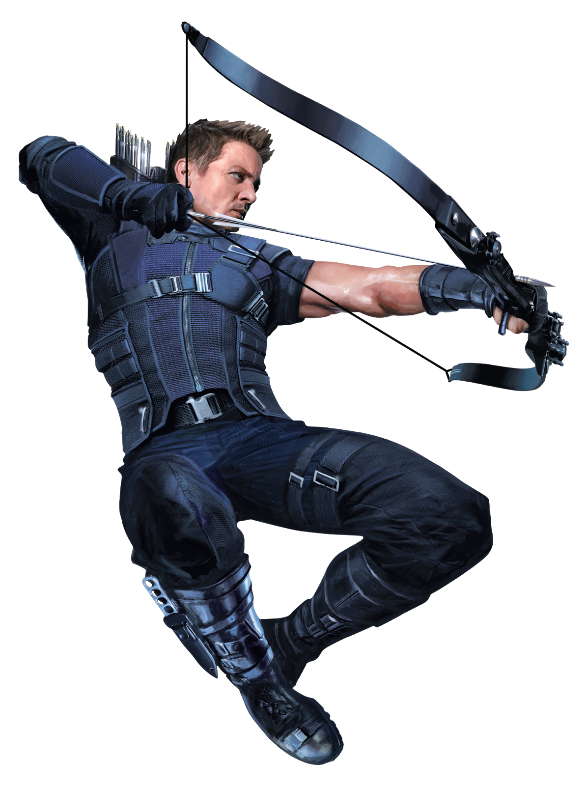
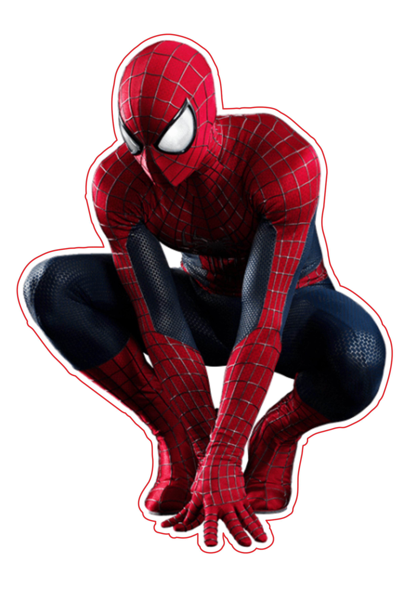
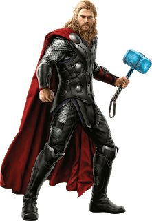
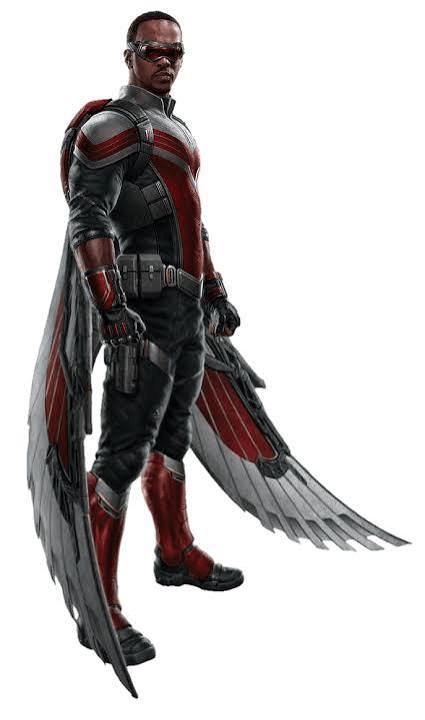
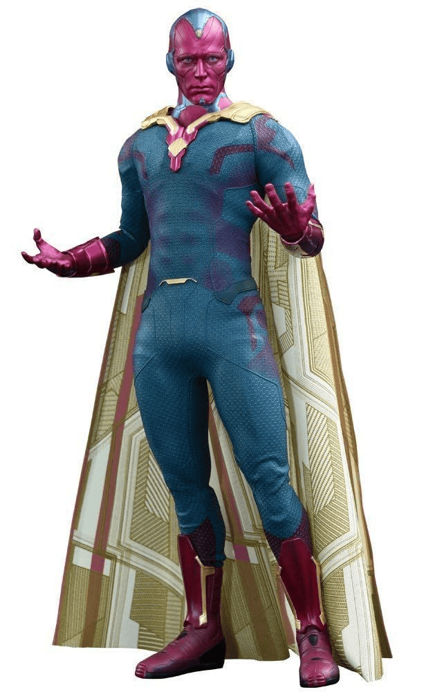

Vingadores, avante!
Conheça os melhores Vingadores mais poderosos da Terra.
Conheça os segredos por trás do escudo de vibranium do Capitão América e sua liderança inabalável no grupo.
Vingadores, avante!
Conheça os segredos por trás do escudo de vibranium do Capitão América e sua liderança inabalável no grupo.

Conheça os Herois

Líder da equipe de Vingadores, conhecido por seu escudo de vibranium e sua força e habilidades de combate.

Genial inventor e empresário, conhecido por seu traje tecnológico avançado e sua inteligência excepcional.

Conhecido por sua força sobrenatural e sua capacidade de se transformar em uma forma mais poderosa quando irritado.

Ele é um agente secreto de elite, mestre em táticas de infiltração e o atirador definitivo dos Vingadores. Embora não tenha superpoderes sobre-humanos, possui uma mira e precisão absolutamente perfeitas com seu arco.

Ele é um jovem estudante de Nova York que ganhou poderes incríveis após ser picado por uma aranha geneticamente modificada.

Ele é o Deus do Trovão, guerreiro implacável e o príncipe herdeiro do reino mitológico de Asgard. Sendo um ser de nível divino, possui força monumental, imortalidade parcial e controle absoluto sobre raios e tempestades.

É uma das fundadoras e principais heroínas dos Vingadores, cuja trajetória é marcada pela busca de redenção por seu passado como espiã e assassina.

Ele é um ex-militar de resgate tático da Força Aérea e o aliado mais leal do Capitão América. Destaca-se no campo de batalha utilizando um traje especial com asas mecânicas rígidas de alta tecnologia.

Ele é um ser sintozóide avançado, criado a partir de um corpo de vibranium e da Joia da Mente. Ganhou vida através da inteligência artificial J.A.R.V.I.S. combinada com os poderes místicos do trovão de Thor.

Ele é uma das mutantes e magas mais poderosas do universo, cujos poderes foram ampliados por experimentos científicos.

Ele é um ex-militar de resgate tático da Força Aérea e o aliado mais leal do Capitão América. Destaca-se no campo de batalha utilizando um traje especial com asas mecânicas rígidas de alta tecnologia.

Ele era um cirurgião arrogante que perdeu o movimento das mãos e encontrou a cura nas artes místicas. Tornou-se o Mago Supremo da Terra, responsável por proteger a nossa dimensão de ameaças sobrenaturais e cósmicas.